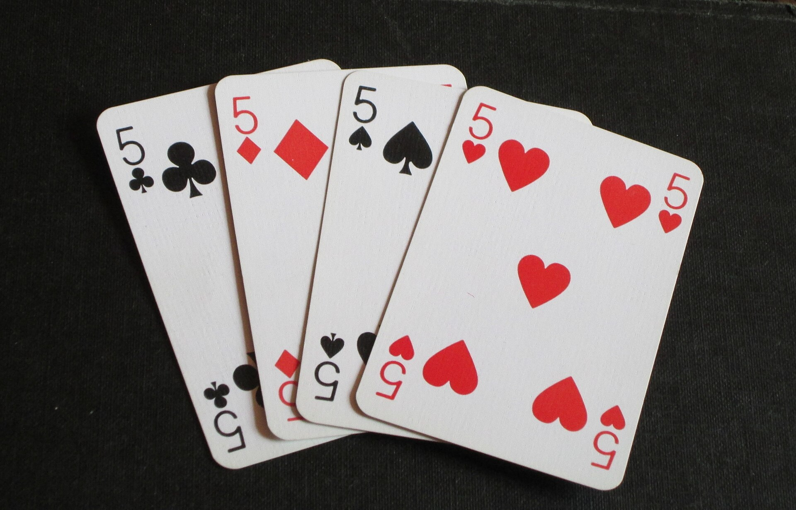

Classes, Objects and Enums
Week 4 split a program into methods. This week the methods get something to
belong to: objects, bundles of data together with the code allowed to touch it,
built from classes. You will write your own classes in Java and Python, see what
new and this really do, meet enums — types with a
fixed set of values — and see what Java’s switch has grown into since
Week 2.
The lecture, then the practice
Choose a section from the list to open it — or use the arrow keys once the list has focus. Code blocks are live: edit them, run them, and break them on purpose. Several of them are meant to fail — read what the compiler says before you fix them.
01The ideas behind OOP
1.1A brief history
Object-oriented programming (OOP) is a broad family of ways to design programs, centred on one idea: bind data to the code that is allowed to manipulate it, in a single entity called an object.
Historically the idea grew, possibly ironically, out of the functional language Lisp in the late 1950s and early 1960s. Simula introduced many of the concepts still in C++ and Java — classes, dynamic binding, inheritance — with syntax close to Algol 60, which is why it reads fairly easily to a Java programmer. Smalltalk was designed as an OO language from the ground up and is often called the first “true” one, but Simula has had the greater effect so far — not least because Bjarne Stroustrup used it during his doctoral work and then built its ideas into C++.
The class concept allowed me to map my application concepts into the language constructs in a direct way that made my code more readable than I had seen in any other language.
Bjarne Stroustrup, A History of C++: 1979–1991, HOPL-II, 1993 — on writing his PhD simulator in Simula Portrait: Victor Zavyalov / ICPCNews, 2013 · CC BY 2.0OOP became the dominant paradigm in the 1990s, with C++, the arrival of Java, and a software industry that needed modular, reusable, maintainable programs at large scale. Like any tool it can be used badly; used well, it is a very powerful way to build large software that can be extended without being rewritten.
Two Turing Awards in three years went to object orientation. The 2001 award went to Ole-Johan Dahl and Kristen Nygaard “for ideas fundamental to the emergence of object-oriented programming, through their design of the programming languages Simula I and Simula 67”; the 2003 award to Alan Kay for “leading the team that developed Smalltalk”, among other things. Both Stroustrup and James Gosling, Java’s creator, have named Simula as a major influence. Source: Wikipedia — Turing Award and Simula.
1.2The four pillars
“Object-oriented” covers anything whose fundamental unit is the object, but almost every OO language rests on four principles:
| Pillar | What it means |
|---|---|
| Encapsulation | Data is enclosed in objects. That gives it context, and control over how it is accessed and changed. |
| Abstraction | Implementation details are hidden from the outside. Two implementations that do the same job are interchangeable; users only deal with the abstraction. |
| Inheritance | Objects can inherit properties from other objects, so subtypes exist, share what they have in common and differ only where they need to. |
| Polymorphism | One thing, many “shapes”: different implementations of the same method, objects with several types, type information abstracted away. |
They are not completely separate — encapsulation enables abstraction, inheritance supports polymorphism, polymorphism supports abstraction. Under all four sits a vaguer but stronger idea, shared with the modular programming that came before OOP: any unit of a program should not have to care how the rest of the program works in order to work correctly.
1.3Encapsulation
The simplest pillar to get hold of, though its payoff only really shows when you build something
large or fix someone else’s code. This BankAccount (the one from lab 5)
encapsulates two pieces of data and offers methods for controlled access to them. The balance is
kept as a whole number of cents:
Two classes in one file: only one may be public, and the file is
named after it — the Week 1 rule. BankAccount has no access modifier, which is
what lets it share the file.
accountName and balance are private, so code outside the
class cannot interfere with them except through the methods. Try it: this main reaches
for the balance directly.
private is there to stop accidental interference, not a determined
attacker. It is about safety, and a step towards abstraction: code that uses
BankAccount never needs to know how the data is stored inside, only which public
methods it can call.
1.4Abstraction — and we tested the claim
Abstraction says you should not have to care about the insides of something when they do not matter to what it does. A clockwork watch, a digital watch and a phone all present the time; you use them interchangeably whether there are gears inside or a connection to an atomic clock.
For code, that means the rest of a program should not have to change when an implementation does.
The Ed lesson offers a second BankAccount that stores a float instead of
cents, and says the lab program could “probably (I haven’t tested it)” use it
unchanged. So test it. Same main, word for word; only the inside of
BankAccount differs:
Linh’s account agrees with the cents version, to the cent. Bach’s does not: a thousand
one-cent deposits into a million-dollar account simply vanish. A Java float is an IEEE
754 32-bit number with only about seven significant digits, and near 1,000,000 the gap between one
float and the next is 0.0625 — so adding 0.01 rounds straight back to where it
started.
The swap worked exactly as abstraction says it should: main compiled and ran
without a single change. What abstraction cannot do is make the new implementation correct.
That is why the Java lesson suggests storing money as an int number of cents — and
why “I haven’t tested it” is a sentence worth never leaving in your own code.
1.5Inheritance and polymorphism, briefly
Inheritance arrives properly in the next few lessons. In Java it comes in two forms, class-based inheritance and interfaces, and it does two jobs at once: a child class reuses its parent’s data and methods instead of reimplementing them, and a child can be treated as the same kind of thing as its parent.
Polymorphism comes in three basic forms:
- Ad-hoc — the same method name applied to different parameter lists. You
have used it constantly: it is Week 4’s overloading, and the
reason
System.out.printlnhas ten versions. - Parametric — type information abstracted out, so code can store or move objects without caring much what type they are. Coming very soon.
- Sub-type — an object can be treated as having the type of any of its parent classes. Also coming very soon.
02Classes and objects in Java
2.1The dot operator, said out loud
A piece of syntax you have been using quietly since Week 1: ., said “dot”.
It takes the thing on its left and retrieves the member inside it named on its right.
| Code | What the dots do |
|---|---|
| System.out.println("Hi") | look in the class System for the class-level variable out (a PrintStream — Week 4, 3.3); in that object find the method println(String), and run it with "Hi" |
| sc.nextInt() | go to the object that the variable sc refers to, find its method nextInt(), and run it with no arguments |
A dot gives you either a value (reading a variable) or a method (which then runs straight away). Because an object variable holds a reference — Week 4, section 6.3 — the dot is sometimes called the dereference operator: it follows the reference to the object. Beyond that there is nothing special about it; it just gets things out of other things.
2.2Classes are templates for objects
An object is a construct that encapsulates data and offers methods to interact with it. An OO language needs a way to define objects — what data they hold, what methods they have — and Java is class-based (as opposed to prototype-based): a class is the template for its objects.
<access modifier> class <Name> {
<data and methods>
}- Access modifiers are the ones you know from methods. Classes are almost always
publicfor now — and each.javafile can have only one public class, named the same as the file. - Class names follow the variable rules, but start with an upper-case letter:
Scanner,String,BankAccount.
An empty class is perfectly legal, and occasionally handy as a placeholder to fill in later.
Empty here has no access modifier at all:
A class should have a single clear purpose: it models one entity in the system. What counts as one entity depends on the system, and gets clearer with practice — but it is usually obvious what does not belong. A class modelling a bank account should not also store the staffing details of a branch.
2.3A class with data and methods
A bank account should know whose it is and how much is in it, and offer ways to read and change that. Both the data and the methods are members of the class:
With 50 then 500, the withdrawal is quietly refused — the rule lives inside the class, so no caller can forget it. The class has all the fundamental elements:
- Data members, declared
privateso that only objects of this class can reach them. What could go wrong if they werepublic? - Method members, which allow controlled access to the data.
And notice what is missing: none of these members is static, and there is no
main. BankAccount cannot do anything by itself — you create objects to
hold the data, and other classes build them into a program. An OO program works through the
interactions of classes and objects.
A real version would want an AccountHolder class instead of a bare name, would store
cents rather than a double (section 1.4), and would say what happens when a withdrawal
fails — and it is probably not this class’s job to validate amounts at all.
2.4Classes are types
A class is not only a template: it is a type. A variable’s type can be a class, and so can the element type of an array, the return type of a method and the type of a parameter. That buys real confidence:
BankAccount[] accounts = new BankAccount[numberOfAccounts];
Nothing that is not a BankAccount can get into accounts — the
compiler (or, failing that, the runtime) stops it. And because an object can be handed to a method,
you can pass in functionality, not just data: below, countSameOwner does not pull
the names out and compare them itself; it asks the account, because the account knows
what “same owner” means.
Two details: hasSameOwner may read other.customerName
even though it is private, because private means “only code in this class”,
not “only this object”. And Strings are compared with .equals, not
== — section 4.4 shows why. The Ed lesson’s own version of this method returns
a List, which you have not met in Java yet; it is the same idea.
Now try to put something else in the array:
03static: the class itself
3.1One copy, shared by every object
Objects quickly become the main actors in a Java program, but the class is still a thing in its
own right. Anything marked static lives on the class: it exists without
any objects, and it is not copied into objects at all. Reach a static variable through an
object and you get the one class-level copy that every object shares:
The Java Language Specification: for a static field “there exists exactly one
incarnation of the field, no matter how many instances (possibly zero) of the class may eventually
be created”. If every object of a class should share one value, this is how; it is also how to
define program-wide constants, as static final — like the pizzas array in
Week 4’s pizza shop.
a.value looks as though it belongs to a. It does not. Write
Silly.value for static members, so the code says what is really happening.
3.2Static methods
The class also provides all the static methods. main is the obvious one
— it runs first, before any object exists. But any method that needs nothing beyond its
parameters (and other static data) can be static and used without creating an object:
x, y and radius need an object before they have any memory or
value, but the static constant PI and the static area(double) can be used with
no Circle in existence. The instance method area() simply hands its own radius
to the static one — two methods called area, told apart by their parameter lists:
Week 4’s overloading again.
Java also provides a far better π as the static constant Math.PI
— another class used without ever creating an object of it.
3.3What a static method cannot see
A static method runs on the class, with no particular object — so there is no
radius for it to read. The compiler says so:
| Member | Lives on | Needs an object? | Can use |
|---|---|---|---|
static variable | the class — one copy | no | — |
| instance variable | each object — one copy per object | yes | — |
static method | the class | no: Circle.area(5) | its parameters and static members only |
| instance method | the class, run for one object | yes: c.area() | everything, including that object’s variables via this |
This is the same rule as Week 4’s Cannot make a static reference to the non-static method, now for a variable.
04Constructors, this, and objects in memory
4.1What an object is, in memory
In Java all objects are created dynamically, so they always live on the
heap (Week 4, section 6.3). A new object gets space only
for the class’s non-static variables, plus a little bookkeeping. The methods, the
static variables and everything else shared by all objects of the class are stored once,
with the class — the JVM specification calls that area the method area, which
stores “per-class structures such as the run-time constant pool, field and method data, and the
code for methods and constructors”.
An object variable is then just a reference to where that data sits on the heap — which is exactly what made Week 4’s arrays behave as they did when passed to methods.
new Circle(6, 7, 3) and new Circle() in section 4.3: two
objects, each with its own four variables, and one class holding the shared
PI and the code of every method. (Each colour is itself a reference, to a
String elsewhere on the heap.)4.2new and constructors
You have written this line in every program that reads input:
Scanner sc = new Scanner(System.in);
Type, variable name, then an initialisation that creates an object on the spot.
new tells the JVM to allocate the right amount of heap memory for a Scanner and
run a special method called a constructor — here the one that takes
System.in. A constructor is where the object’s data members are normally initialised
and anything else it needs is prepared. It runs once per object, and always
first.
public class <ClassName> {
<access modifier> <ClassName>(<parameter list>) {
<code>
}
}- An access modifier and a parameter list, like any method — but no return
type, not even
void. - Its name is the class’s name, so it is one of the few method names that starts with a capital letter.
- A class can have several constructors, following the normal overloading rules.
- If you write no constructor, Java supplies a default
constructor that takes no parameters and does nothing beyond creating the object. That is why
new Empty()worked in section 2.2.
The catch in that last rule: no constructor. Write one of your own and the free one is gone:
Ed’s javac words it as constructor Point in class Point cannot
be applied to given types. The fix is to declare a Point() yourself, if a point with no
coordinates makes sense — which is where the next section’s trick comes in.
4.3this
An object can always get a reference to itself with the keyword this. It has two
handy uses:
- Telling a field from a parameter with the same name:
this.x = x;sets the object’sxto the value of the parameterx. Common practice in constructors. - Calling another constructor:
this(0, 0, 0);runs a different constructor of the same class. It must be the first line of the calling constructor. This lets a short constructor fill in defaults without repeating code.
Follow new Circle(): it calls the three-parameter constructor with
zeros, which calls the four-parameter one with "Colourless". Only one constructor actually
sets fields, so there is one place to get it right. (This PI, 3.141529, is the Ed
lesson’s own “approximation” — it even has two digits swapped compared with
section 3.2’s. One more reason to use Math.PI.)
4.4Two variables, one object — again
Because an object variable is a reference, everything Week 4 showed for arrays holds for objects you design yourself. Copy the variable and you have two names for one account; pass it to a method and the method can change the account through it:
== on objects compares references
a == c is false although the two accounts started identical: they are two
different objects, and == asks “are these the same object?”. That is
also why two Strings are compared with .equals — a String is an object, and two
Strings with the same letters need not be the same object. Enums, in section 7, are the pleasant
exception.
4.5The pizza shop, with classes
The Ed lesson finishes by rebuilding the pizza shop with classes, over four video parts and forkable
workspaces. Here is one way to do it: a Pizza that knows its name and price (in cents
— section 1.4), and an Order that holds pizzas and can total itself. Enter three
selections, then 0 to finish:
Read main and notice who does what: the shop never adds prices up
itself — it asks the order — and never formats money itself — it asks the static
helper on Pizza. Two orders of the same pizza hold two references to one
Pizza object from the menu, which is fine: nobody changes it.
05Classes and objects in Python
5.1Roughly Java’s model
Python’s object model is roughly similar to Java’s: a class is a template, objects are instances of it, and the class itself is still a thing in the code, so data and functions can live on the object or on the class.
And since every Python variable is already a reference (Week 4, section 7.4), two variables can hold references to the same object and change the same object — exactly like the Java accounts in section 4.4.
5.2Classes and objects
A class is defined much as you would guess: class, a name, a colon, and indentation.
Objects are created by calling the class like a function, with whatever arguments it needs —
no new:
5.3Attributes, and three kinds of method
Python’s general word for a class’s data and functions is attributes, reached with the dot, just as in Java. Once functions live on a class or an object they are called methods, and there are three kinds:
| Kind | Declared | First parameter | Called as | Closest Java |
|---|---|---|---|---|
| static method | a plain function in the class, optionally marked @staticmethod | none | Foo.baz(x) | a static method |
| class method | @classmethod | cls — the class, supplied automatically | Foo.bar() | a static method that uses static data |
| instance method | no marker | self — the object, supplied automatically | obj.bar() | an ordinary method; self is like this |
Why must an instance method take self? Because calling a method through an
object passes that object in as the first argument. A function with no parameter has nowhere to
put it:
The word “static” is being used slightly differently from Java: the intent is the same (no object needed), the details are not. What Java calls a static method is often closer to Python’s class method.
5.4__init__ and instance data
Unlike Java, Python instance data is generally not declared in the class. It is
created in the __init__ method — Python’s equivalent of a constructor, and an
instance method — by assigning through self, and read back through self
too. Every class has an __init__, even if you do not write one.
With parameters, __init__ does exactly the job of section 2.3’s Java constructor.
The same bank account, in Python:
class BankAccount:
def __init__(self, customer_name, starting_balance):
self.customer_name = customer_name
self.balance = starting_balance
def deposit(self, amount):
if amount > 0:
self.balance += amount
account = BankAccount("Linh", 100.0) # no new, and no argument for self
account.deposit(50)
print(account.balance) # 150.0Nothing stops account.balance = 1000000 here: in Python, attributes
are public unless you say otherwise. Section 6.3 is what “otherwise” looks like.
06Dunder methods and open doors
6.1“Dunder” methods
Python has methods with special names, surrounded by double underscores
— hence “dunder”, also called magic or special methods. They connect a class to the
built-in functions and operators of the language. __init__ is one: it hooks into object
creation.
Another is __str__, the method str() calls — and print
too — much like Java’s toString(). Each dunder has its own rules:
__init__ may take extra parameters and returns nothing; __str__ takes only
self and must return a string.
Dunders are the standard way to give your own type built-in behaviour:
__add__ for +, __lt__ for <, and many more. (Java
has no equivalent for operators: + on your own class is simply a compile error.)
6.2Horrible things you can do in Python
At a simple level, a Python class’s attributes behave like a dict, and access is
public by default — so other code can replace them, if it knows the names. Offered without further
comment, from the Ed lesson:
A method replaced from outside the class, and a brand-new attribute bolted on at run time. The Java compiler would reject every one of these lines. Python lets you — which is precisely why you should not.
6.3How to stop (some of) that
Python gives you a way to discourage this. Unless you say otherwise an attribute is public. Start its name with two underscores and code outside the class can no longer reach it by that name:
It works for methods too — but not for dunder methods, even though they look similar, because a dunder name also ends in two underscores:
Now look back at the error from the first example: Python itself suggests _Foo__priv_data. The two
underscores do not make the attribute private in Java’s sense; inside the class, Python quietly
renames it (“name mangling”), and the new name works from anywhere:
“Private” instance variables that cannot be accessed except from inside an object don’t exist in Python.
The Python Tutorial, §9.6 Private VariablesSo the double underscore is a strong “keep out” sign, not a lock —
which matches section 1.3’s point that encapsulation is about safety, not security. A
single leading underscore (_spam) is the other convention, which the
tutorial describes as marking a non-public part of the code; the Ed lesson calls this
“protected” and leaves it for later. Neither stops you adding brand-new attributes at run
time.
07Enums

7.1Enumerated types
An enumerated type is a data type with a fixed, finite set of named values. There are many ways to implement one, but the goal is always the same: data of that type can only ever be one of the known values. They appear in most languages descended from Algol — Pascal, C, C++, C#, Java — and in Swift, Fortran, Lisp, TypeScript and every functional language with algebraic types.
The classic example: a standard deck has exactly four suits, so any question about a card’s suit must be answered with one of those four, and nothing else.
7.2Enums in Java
enum <Name> { [<VALUE_NAME> [, <VALUE_NAME>]*]; }The keyword enum, a name (capitalised like a class), then a comma-separated —
possibly empty — list of value names ending in a semicolon. By convention the values are in
capitals, like constants. An enum can be declared on its own or inside a class. A value is reached as
Suit.HEARTS, like a field, and every enum has a values() method that works with
the for-each loop:
Enums arrived in Java 5. ? : is the conditional operator from the Weeks
2+3 operator tables — a tiny if/else that produces a value.
Before Java 5, the standard way to write an enumerated type was a row of int
constants: public static final int SEASON_WINTER = 0; and so on. The Java 5 release notes
list what was wrong with it, starting with “Not typesafe” — any int could
be passed where a season was expected, and two seasons could be added together. Enums fixed that by
making each set of values a type of its own.
Source:
Oracle — Enums (J2SE 5.0 guide).
7.3== is safe on enums
Java enums are implemented as a special kind of class: think of a class with a fixed number of pre-declared objects — the values. You cannot create more (or fewer) of them, so you never need a constructor call, and there is exactly one object for each value. The Java Language Specification: “An enum class has no instances other than those defined by its enum constants.”
So, unlike the accounts in section 4.4, comparing with == works as you would naively expect
— for enums, .equals gives the same answer as comparing references, because there are
never two copies of the same value.
7.4Switching on an enum
You can switch on an enum value. Inside the switch, the cases are written without the
enum’s name:
This is the classic switch statement from Weeks 2+3, stacked cases and all. It
does not check that you covered every value. Put a return in every case of a method and the
compiler still wants one more, because as far as it is concerned the switch might match nothing:
Week 4’s missing return statement again. Add
default: return "unknown"; to satisfy it. The newer switch expressions in
section 8 are checked for exhaustiveness — one of the Ed lesson’s selling
points for them.
7.5Enums are classes, so they can have methods
Because an enum is a class, you can add methods to it — and each value is an object, so
this inside the method is “whichever value I am”. Here each suit knows its own
symbol and colour:
An enum can also hold fields and constructors of its own, which the Ed lesson mentions but does not go into. And one striking application: make a class an enum with a single value, and the compiler itself guarantees there is exactly one instance — the Singleton pattern, with no checking code at all.
7.6The deck of cards
The Ed lesson’s full example builds a short (Euchre) deck: two enums, a record for a
card, and switch expressions to print them. Records (Week 4) and switch expressions need Java 16
and 14, so it will not run in this page’s Java 8 console — here is its second version, with the
printing moved into the enums, and its real output. Run it on Ed.
import java.util.Random;
import java.util.Arrays;
public class Deck {
// Two enums to express the possible cards. NOW WITH METHODS!!!
private enum Suit {
HEARTS, SPADES, DIAMONDS, CLUBS;
@Override
public String toString() {
return switch (this) { // What am I?
case HEARTS -> "♥";
case SPADES -> "♤";
case DIAMONDS -> "♦";
case CLUBS -> "♧";
};
}
}
private enum Value {
ACE, TEN, JACK, QUEEN, KING;
@Override
public String toString() {
return switch (this) {
case ACE -> "A";
case TEN -> "10";
case JACK -> "J";
case QUEEN -> "Q";
case KING -> "K";
};
}
}
private record Card(Suit suit, Value value) {
@Override
public String toString() {
// Now this one is a lot simpler:
return this.value.toString() + this.suit.toString();
}
}
private final Random rand;
private final Card[] deck;
public Deck() {
this.rand = new Random(System.currentTimeMillis());
deck = new Card[Suit.values().length * Value.values().length];
int i = 0;
for (Suit s : Suit.values()) {
for (Value v : Value.values()) {
deck[i++] = new Card(s, v);
}
}
}
public void shuffle() {
for (int i = 0; i < this.deck.length; i++) {
int randIndex = this.rand.nextInt(this.deck.length);
Card temp = this.deck[i];
this.deck[i] = this.deck[randIndex];
this.deck[randIndex] = temp;
}
}
@Override
public String toString() {
return Arrays.toString(this.deck);
}
public static void main(String[] args) {
Deck deck = new Deck();
System.out.println("Check that all the cards are there: ");
System.out.println(deck);
deck.shuffle();
System.out.println("Now we can shuffle them: ");
System.out.println(deck);
}
}
Check that all the cards are there: [A♥, 10♥, J♥, Q♥, K♥, A♤, 10♤, J♤, Q♤, K♤, A♦, 10♦, J♦, Q♦, K♦, A♧, 10♧, J♧, Q♧, K♧] Now we can shuffle them: [Q♧, J♦, A♤, Q♦, 10♧, K♥, A♥, 10♥, A♦, J♥, K♤, K♧, A♧, Q♥, J♧, K♦, 10♦, 10♤, Q♤, J♤]
@Override marks a method that replaces one the class would otherwise inherit — here,
the toString() every object has, which is what + and println call.
That is inheritance showing through, a lesson early. The same deck in Java 8 terms — a small
Card class instead of the record, classic switches instead of switch expressions — runs
right here:
Run it twice: the shuffle changes, because the Random is seeded from the
clock. Compare the two versions line by line — everything the record and the arrows did is here
written out in full.
7.7Python enums (sort of)
Python has enums too, somewhere between Java’s approach and C’s. You import
Enum from the enum module and create your enum as a class that
extends it — inheritance again, a little early — listing names with values. The
example the Ed lesson takes from the Python documentation, with two lines added:
As they are classes, you can add methods — here the dunder __str__ from section 6.1,
which print then uses:
The differences from Java are in the values. They can be anything — you would
normally see the integers 1 to n, but RED = "red", GREEN = 2,
BLUE = 3.0 is allowed. And nothing stops two names sharing a value, which quietly changes
what the names mean:
A second name with an existing value becomes an alias for the first
member, so this “three-colour” enum has one member, RED, with two extra names.
The Ed lesson’s conclusion stands: Python enums work well when used as intended, without the
guarantees of Java’s. (The members are objects of the enum class, though:
isinstance(Colour.RED, Colour) is True, as the Python enum HOWTO shows.)
7.8And in C, just numbers
For comparison: an enum in C is a set of names for the numbers 0 to (number of values − 1),
assigned automatically. That keeps the key property — a fixed set of distinct values — but not
Java’s type safety: underneath, it is just an int.
#include <stdio.h>
enum Suit {HEARTS, SPADES, DIAMONDS, CLUBS};
enum Suit s; // Yeah, this syntax is weird... but you know... C...
int main() {
s = SPADES;
printf("%d", s); // Secretly it's just a number!
return 0;
}1
08Advanced switch
Weeks 2+3 taught the switch statement: equality only, fall-through, and
break. Java has since added three things: switch expressions,
pattern matching, and when clauses. All three need a newer
Java than this page’s console — section 8.2 shows exactly what happens if you try — so
most examples here are static, with their real output from a current JDK. Run them on Ed, which uses
Java 23.
8.1Stretching the old switch
A plain switch only tests equality, but careful choice of the expression you switch on can stretch it. This runs anywhere, including here:
But the only computation happens once, in the switch’s own expression. The newer features let each case do some of the work.
8.2Why the rest will not run on this page
Here is a switch expression — section 8.3 explains it — in the page’s console. Run it and read the error. It is not a mistake in the program; it is the compiler telling you which version of Java you need:
8.3Switch expressions
A switch expression is like a switch statement, except that each case produces a
value. The syntax changes to case … -> <value>;: an arrow
where you would expect a colon, and no break. The switch hands back the value
after the arrow and is finished — no fall-through, much as a return ends a method. And
because it produces a value, it can go anywhere an expression can (Weeks 2+3, section 1.2):
String s = "The number is " + switch (n % 2) { case 0 -> "even"; default -> "odd"; };Enter a number: The number is odd
Switch expressions must also be exhaustive: every possible value has to be covered.
On an enum that means every constant — which is how the Ed deck’s toString in
section 7.6 gets away with no default, and why deleting a case there is a compile error rather
than a silent bug. Compare section 7.4’s old-style switch, which needed a default anyway.
Switch expressions are older than they look. They were previewed in Java 12 and 13 and became a standard feature in Java 14, in 2020 (JEP 361). The Ed lesson presents them alongside newer features that they combine with. Source: JEP 361 — Switch Expressions.
8.4Pattern matching and when
Pattern matching lets a case examine the type and structure of the value being
switched on, and give it a name. A when clause then narrows a case to a
sub-case with any boolean condition:
import java.util.Scanner;
public class Runner {
public static void main(String[] args) {
Scanner sc = new Scanner(System.in);
System.out.print("Enter a name: ");
Object n = sc.nextLine();
switch (n) {
case String s when s.length() == 0:
System.out.println("You didn't enter a name!");
break;
case String s:
System.out.println("The name you entered was " + s);
break;
default:
System.out.println("I don't know how I got here in this example.");
}
}
}
Enter a name: You didn't enter a name! Enter a name: The name you entered was Linh
case String s matches if n is a String, and names it s for that
case; when s.length() == 0 restricts the first case to the empty ones. Pattern matching works
on objects — it is why n is declared as Object here (the most general type;
more when inheritance arrives). Matching on primitive types is still a preview feature.
Python’s match (Weeks 2+3, section 4.3) has the same
thing, called a guard: if after the pattern. And unlike the Java above, it
runs in this page’s console:
8.5Record patterns, _, and a switch with no default
A tantalising hint of how far this goes, using a record from Week 4:
import java.util.Scanner;
public class Runner {
record Student(String name, int mark) {}
private static String grade(Object o) {
return switch (o) {
case Student(String _, int mark) when mark > 100 -> "caution for cheating";
case Student(String _, int mark) when mark >= 85 -> "HD";
case Student(String _, int mark) when mark >= 75 -> "D";
case Student(String _, int mark) when mark >= 65 -> "C";
case Student(String _, int mark) when mark >= 50 -> "P";
case Student(String _, int _) -> "Z";
case Object _ -> "ERROR NOT A STUDENT";
};
}
public static void main(String[] args) {
Scanner sc = new Scanner(System.in);
System.out.print("What mark should Luke get? ");
int mark = sc.nextInt();
Student luke = new Student("Luke", mark);
System.out.println(luke.name() + " got a " + grade(luke) + ".");
}
}
What mark should Luke get? Luke got a HD. What mark should Luke get? Luke got a caution for cheating. What mark should Luke get? Luke got a Z.
- Deconstruction:
Student(String _, int mark)matches aStudentand pulls its components out, straight into variables. _means “I don’t care about this one” — the name is never used, so it is never named.- No
default:case Object _matches anything left, so the compiler can see the switch is exhaustive. - The cases are tried in order, so 105 hits the first one before it could reach
>= 85— the same ordering rule as anelse ifladder in Weeks 2+3.
The Ed lesson says these became standard “as of Java 23”, the version Ed runs. To be
precise: pattern matching for switch and record patterns became standard in Java
21 (JEP 441, JEP 440), and the _ unnamed variable in Java 22 (JEP
456). Everything here works on Ed’s Java 23.
09Coding exercises
Eight exercises, marked automatically against test cases — the same idea as the Ed labs, but nothing here is recorded or submitted. Write your answer, press Run tests, and read what comes back. A worked solution sits under each one, but try it first.
A capital letter or a missing full stop fails the test, exactly as it would on Ed. Trailing spaces and the final newline are the only things forgiven.
A program that prints the right thing without the class the brief asks for will pass — and
miss the point. Each brief names the class, its private data and its methods; write them, and use
them from main. The Java exercises put two classes in one file, like section 1.3: only the
one with main is public.
10Team activity
Three or four people, fifteen minutes, then two minutes to report back. These run in the lecture and in the lab — class activities like these count towards the participation side of your mark.
Nouns and verbs: design a library
A small library lends books to members. A member can borrow at most three books; a book is either on the shelf or on loan to exactly one member.
- Underline the nouns. Which ones deserve to be classes, and which are just data inside a class?
- For each class, list its
privatedata and its public methods. Which class should enforce “at most three books”? - Is there a fixed, finite set of values anywhere in the description? Should it be an enum?
Report back: the rule your group moved from one class to another, and why.
Break the encapsulation
Take section 2.3’s BankAccount and make balance public.
- Write the shortest
mainyou can that leaves an account in a state the methods would never allow. - Now make it
privateagain. Could the same bug still happen? From where? - Do the same with section 5.4’s Python class, then with a double-underscore name. What did the underscores actually stop?
Report back: the worst realistic bug that private prevents.
int constants versus an enum
Someone writes static final int HEARTS = 0, SPADES = 1, DIAMONDS = 2, CLUBS = 3; instead of
an enum.
- Write a line that compiles with the
intversion but is nonsense. Would it compile with the enum? - What does
System.out.printlnprint for a suit in each version? - Section 7.7’s Python enum with duplicate values: which of your problems does it share?
Report back: the one-sentence case for enums you would make to that someone.
Designing classes is mostly an argument about where things belong. Having that argument with other people, early and often, is the fastest way to get good at it.
11Quiz
Twenty-four questions. Answer them all, then grade. Every question explains its answer, including why the wrong options are wrong. Nothing is recorded or submitted.
Work it out in your head first. If you are unsure, paste the snippet into the Playground afterwards — but guess before you run, or you learn nothing about what you actually believed. (Snippets marked Java 14+ or 21+ will only run on Ed.)
12Further reading
None of this is assessed. It is here for the moment a section leaves you curious, and for the claims above that you should check rather than take our word for.
The official word
Classes and objects
Oracle's walkthrough of declaring classes, fields, constructors, this, and class versus instance members — the reference version of sections 2 to 4.
Enum types
Enums with fields, constructors and methods — the part section 7.5 mentions but does not show, with a solar-system example.
docs.oracle.com Tutorial · sections 5, 6Python classes
Chapter 9 of the Python tutorial: class and instance variables, methods, and §9.6 on private variables and name mangling.
docs.python.org HOWTO · section 7.7Enum HOWTO
The Python guide to enums: names and values, aliases for duplicate values, and why members are instances of their class.
docs.python.orgBehind the claims on this page
A History of C++: 1979–1991
Stroustrup on how writing a simulator in Simula for his PhD shaped C++. The first few pages are the story told in section 1.1.
stroustrup.com JEP · section 8.3JEP 361 — Switch Expressions
The design of switch expressions: the arrow form, yield, and exhaustiveness.
JEP 441 — Pattern Matching for switch
Type patterns, guards with when, and the rules that make a pattern switch exhaustive.
JEP 440 — Record Patterns
Deconstructing records inside a pattern, as in the grading example.
openjdk.org PEP · section 8.4PEP 636 — Pattern matching tutorial
Python's match, including guards and matching on your own classes.
M1Classes in Java and Python, side by side
Reference, not reading.
| Idea | Java | Python |
|---|---|---|
| declare a class | public class Foo { … } | class Foo: |
| create an object | Foo f = new Foo(); | f = Foo() |
| constructor | a method named after the class, no return type | def __init__(self, …): |
| none written | a default constructor is supplied — until you write one | an __init__ always exists |
| instance data | declared as fields in the class | created in __init__ through self. |
| the current object | this — implicit | self — an explicit first parameter |
| class-level data | static field, one copy | a variable in the class body |
| method with no object | static method | static method, or @classmethod with cls |
| hide a member | private, checked by the compiler | __name: renamed, not truly private |
| text form of an object | toString() | __str__ |
| operators on your class | not available | __add__, __lt__, … |
| add an attribute at run time | impossible | possible — and a bad idea |
| enum | enum Suit { HEARTS, … } — a class with fixed instances | class Suit(Enum): HEARTS = 1 — values can be anything |
| same object? | a == b | a is b |
What to actually do
On Ed, work through the five Week 5 lessons. This order matches the sections above:
- Fundamentals of Object Oriented Programming — section 1
- Classes and Objects in Java — sections 2 to 4, including the four pizza-shop parts and their forkable workspaces
- Classes and Objects in Python — sections 5 and 6
- Enums in Java (and Python sort of) — section 7
- Advanced switch Statements in Java — section 8
Records, switch expressions, pattern matching and when need Java 14 to 22; this page’s
console runs Java 8. Those examples are printed with their real output — paste them into Ed to run
them, and change them.
Assessed lab exercises are due 11:55pm the Monday of the following week, and you must pass all test cases in an exercise to get its marks. Canvas → Assignments is authoritative for what is due and when; where this page differs, Canvas and the announcements win.
Write one small class of your own from nothing — private data, a constructor, two methods —
and use it from a main in another class. Then do it again in Python. Everything from here on
is built out of that.
Everything cited on this page
The lecture content comes from the Week 5 lessons on Ed. The links below are for the claims this page adds around them — checking a source yourself is a better habit than trusting any lecture slide, including ours.
Specifications and documentation
| Used in | Source |
|---|---|
| 1.4 | The Java Language Specification, Java SE 25, §4.2.3 — float is IEEE 754 binary32; the 0.0625 spacing at 1,000,000 is Math.ulp(1000000f), run on JDK 26 |
| 3.1 | JLS §8.3.1.1 — “exactly one incarnation of the field” |
| 4.1 | The Java Virtual Machine Specification, Java SE 25, §2.5.4 — the method area |
| 4.2 | JLS §8.8.9 — “If a class contains no constructor declarations, then a default constructor is implicitly declared” |
| 2–4 | Oracle — Classes, The Java Tutorials |
| 6.3 | The Python Tutorial, §9.6 Private Variables — name mangling and the _spam convention |
| 7.2 | Oracle — Enums, J2SE 5.0 language guide — the int enum pattern, “Not typesafe” |
| 7.3 | JLS §8.9 — “An enum class has no instances other than those defined by its enum constants.” |
| 7.7 | Python — Enum HOWTO (aliases; isinstance of members); PEP 435 (enum added in Python 3.4) |
| 8.3–8.5 | JEP 361 (switch expressions, JDK 14); JEP 441 (pattern matching for switch, JDK 21); JEP 440 (record patterns, JDK 21); JEP 456 (unnamed variables and patterns, JDK 22) |
| 8.4 | PEP 636 — Structural Pattern Matching: Tutorial — guards |
Quotations
Every quotation on this page was checked against a primary source — the original paper or documentation, not a quotation website.
| Used in | Source |
|---|---|
| 1.1 | Bjarne Stroustrup, A History of C++: 1979–1991, ACM HOPL-II, 1993, §1 Introduction |
| 1.1 | 2001 and 2003 Turing Award citations, as listed in Wikipedia — Turing Award |
| 6.3 | The Python Tutorial, §9.6 Private Variables |
Photographs
From Wikimedia Commons, reused under the licence each one names. Author and licence come from the Commons API rather than from anyone’s memory — see media/fetch-photo.py.
| Image | Source |
|---|---|
| cookie-cutter | Apple Shaped Cookies (14888835148) — Personal Creations, 2014 · CC BY 2.0 |
| playing-cards | Playing Cards - number fives — Sudzie, 2021 · CC BY-SA 4.0 |
| kristen-nygaard | Kristen-Nygaard-SBLP-1997-head — Jorge Stolfi, 1997 · public domain |
| stroustrup | Bjarne Stroustrup (2013) — ICPCNews (photographer Victor Zavyalov), 2013 · CC BY 2.0 |


Articles
| Used in | Source |
|---|---|
| 1.1 | Simula — Stroustrup and Gosling acknowledging Simula as a major influence |